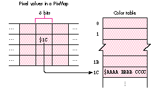
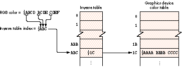
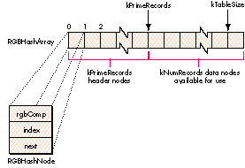

Color QuickDraw can be customized for specific tasks in many ways, most commonly
by replacing the "bottleneck" procedures at its heart. But another, often overlooked
way of customizing Color QuickDraw is by writing and installing custom color search
procedures. These procedures are very useful for color separation and other color
processing tasks, and for modifying QuickDraw's default drawing behavior to solve
particular problems. This article reviews some Color QuickDraw basics, explores
how color search procedures work, and presents a sample search procedure.
It's 2 A.M., and you're finally ready to draw your carefully constructed offscreen
GWorld to a window. The GWorld is 32 bits deep and has been set up to contain a color
ramp using 100 shades of red. You've already created a palette containing the 100
shades of red you need and attached it to your window, so the exact colors will be
available on your 256-color screen. You plunk in your call to CopyBits, recompile,
and . . . Ack! Instead of the expected smooth red ramp, you get an image with 16 distinct
bands of color (see Figure 1 on the inside back cover of this issue).
What happened? How can you get the results you want? This article attempts to
answer both of these questions, and a few others along the way. What happened has to do
with the way Color QuickDraw converts colors to pixel values, so we'll start with a
brief review of how this works. As for getting the results you want, one way is to use a
custom color search procedure, which is the main subject of this article.
Before delving into custom color search procedures, let's pause for a quick review of
how QuickDraw converts between colors and pixel values. If you're already familiar
with this, feel free to skip ahead to the section "Drawbacks of Inverse Tables."
How QuickDraw converts colors to pixel values and vice versa is discussed
in Inside Macintosh: Imaging With QuickDraw , and in the Color Manager chapter of
Inside Macintosh: Advanced Color Imaging(available on this issue's CD in draft form).
Only a brief overview of this complex topic is provided here.*
DIRECT AND INDEXED COLOR
When an application does any drawing with Color QuickDraw, the ultimate result is to
change some pixel values in a pixel map somewhere. Color QuickDraw in System 7
(and 32-Bit QuickDraw in earlier systems) supports two distinct types of color pixel
maps:direct and indexed . In direct pixel maps (those with pixel depths of 16 or 32
bits) the pixel values in memory specify RGB color information for the pixel directly.
For example, the 32-bit direct pixel value $00AABBCC specifies a red component of
$AA, a green component of $BB, and a blue component of $CC -- 8 bits of color
information each for the red, green, and blue components. (A 16-bit pixel value
contains 5 bits of color information for each component.)

Figure 2. Indexed color
In indexed pixel maps (those with pixel depths up to 8 bits) the pixel values in
memory don't directly specify the colors at all; instead they specify positions in a
table of the available colors, called thecolor lookup table or just color table
(sometimes called aCLU T ). Figure 2 shows an example; in this case, the 8-bit pixel
value $1C in memory actually represents the RGB color $AAAA BBBB CCCC, found at
position $1C in the color table.
Typically, when an application wants to draw in a particular color, it specifies the
desired color directly using an RGBColor record, and never deals with pixel values at
all. Color QuickDraw and the Color Manager convert between RGBColors and pixel
values as needed. If the application is drawing to a direct pixel map, the color
information itself is used to build the pixel value, and no color table is involved. On the
other hand, if the application is drawing to an indexed pixel map, Color QuickDraw
uses the index of the closest-matching color in the color table as the pixel value (this
process is calledcolor mapping ). But searching the entire color table for a match
every time a pixel value is needed would be far too time-consuming, so the Color
Manager uses something called an inverse table to speed up the lookup process.
INVERSE TABLES
An inverse table is something like a "reverse" color table: whereas a color table is
used to convert an index to a color, an inverse table is used to convert a given color to
an index into a color table. The conversion operation goes like this: You take some of
the most significant bits of each color component and concatenate them, then use the
resulting number as an index into the inverse table. The entry at that location in the
inverse table holds, in turn, the index of the closest-matching available color in the
corresponding color table. Figure 3 illustrates the process. Note that the
closest-matching color returned by this process need not match the original color
exactly, since only a few of the most significant bits were used (the default is 4 bits).

Figure 3. Inverse table with 4-bit resolution
Inverse tables are described in the Color Manager chapter of Inside Macintosh:
Advanced Color Imaging. *
The number of bits each color component contributes to the inverse-table index is
called theresolution of the inverse table. Higher resolutions would give you greater
accuracy in color mapping, but also greatly increase the memory needed to hold the
inverse table, so a maximum of 5-bit resolution is allowed. (Since there are three
color components, each additional bit of resolution multiplies the size of the table
eightfold.) You can use the Color Manager routine MakeITable to create inverse tables
with resolutions of 3, 4, or 5 bits per component.
As an aside, Listing 1 shows how to temporarily change the resolution of the current
graphics device's inverse table to 5 bits. (To permanently change the inverse table
resolution, set the gdResPref field of the GDevice record, set the iTabSeed field of
gdITable to the result of GetCTabSeed, and call GDeviceChanged.)
Listing 1. Temporarily changing the resolution of the inverse table
VAR
gdh: GDHandle;
oldITabRes: INTEGER;
{ Get current graphics device. }
gdh := GetGDevice;
{ Get resolution of current inverse table. }
oldITabRes := gdh^^.gdITable^^.iTabRes;
{ Create a new inverse table at 5-bit resolution. }
MakeITable(NIL, NIL, 5);
{ Draw into a port on this device. }
...
{ Reconstruct inverse table at original resolution. }
MakeITable(NIL, NIL, oldITabRes);
Note that inverse tables aren't found in pixel maps or color graphics ports. They're
instead associated withgraphics devices (astute readers may have noticed that the color
table in Figure 3 was labeled "Graphics device color table" -- this is why). So when
converting RGBColors to indexed pixel values, the Color Manager uses the inverse
table in thecurrent graphics device . The implications of this are discussed in "The
Importance of the Current Graphics Device."
The main problem with using inverse tables for color mapping is that because of their
limited resolution, different colors can map to the same inverse table index. Inverse
tables actually include some extra, undocumented information to allow the Color
Manager to resolve such "hidden colors" -- but examining this extra information is
time-consuming, so some speed-sensitive QuickDraw routines don't always use it. One
of these routines happens to be CopyBits, which is what accounts for our "100 shades
of red" problem.
Let's look at the problem in more detail. The offscreen GWorld holding our image is 32
bits deep, allowing the pixel values to specify RGB colors directly, with a precision of
8 bits per component. When we copy the image to a window on an indexed graphics
device, CopyBits uses an inverse table to convert these pixel values from direct to
indexed. If our inverse table has a resolution of 4 bits (the default), it can only
distinguish 24 = 16 shades of red! (For example, all shades of red from RGB $0000
0000 0000 to $0FFF 0000 0000 will map to the same inverse-table index.) Soeven
if all 100 shades are available in the destination device's color table, only 16 of them
will actually be found and get drawn on the screen. This is why the actual result in
Figure 1 has 16 bands of red instead of a continuum of shades.
The various depth conversion cases are discussed in the book Programming
QuickDraw (see "Related Reading" at the end of this article) beginning on page 338. *
One way to deal with this problem would be to increase the resolution of the inverse
table to 5 bits, which would give us 32 bands of red instead 16. Another approach
would be to use the ditherCopy transfer mode in CopyBits. Both of these methods give
better results but don't really solve the problem. After all, since wedo have all the
shades of red available, shouldn't there be some way to match the colors exactly?
Knowing that inverse tables might not be adequate for some applications, the
QuickDraw engineers designed in a "hook" to allow developers to provide their own
color-mapping code. Each GDevice record has its own linked list of customcolor search
procedures; there can be any number of such procedures installed for a given graphics
device. As defined in the Color Manager chapter ofInside Macintosh: Advanced Color
Imaging , a search procedure has the following interface:
FUNCTION SearchProc
(VAR rgb: RGBColor; VAR position: LONGINT): BOOLEAN;
The rgb parameter is now always a VAR parameter. This was not true for
direct-color destinations in 32- Bit QuickDraw prior to System 7. Also, note that
Inside Macintosh Volume V incorrectly declared rgb as a value parameter.*
The Color Manager calls the search procedure with the RGB color it's trying to match,
and expects the search procedure to do one of three things:
The Color Manager runs through the list of search procedures for the current graphics
device, calling each procedure in turn until one of them returns TRUE. If no search
procedure returns TRUE, it uses the default color-mapping method on the original (or
possibly modified) color. For indexed graphics devices, this means using the inverse
table. For direct graphics devices, "color mapping" simply involves truncating the
RGBColor components to the appropriate size.
When called with an arithmetic transfer mode, CopyBits calls custom color
search procedures before the arithmetic operation is performed. You can get around
this by doing the desired operation first and then installing the search procedure and
using CopyBits with srcCopy mode to display the result. *
The search procedure mechanism provides a solution to our "100 shades of red"
problem. If we know where all the shades are located in the current graphics device's
color table, we can write a search procedure that returns the correct index for any
shade of red we pass to it. This will avoid the bands shown in the actual result in
Figure 1 and instead produce the expected result, with the exact colors intended. Of
course, this technique can be applied toany image if we know where to find all the
colors we need in the color table; we'll examine the technique in more detail later.
MODIFYING SEARCH COLORS
The fact that the desired color is passed to the search procedure through a variable
parameter is significant: it means that the procedure can actually modify the color
value it receives. In this case, the search procedure should return FALSE, telling
QuickDraw to perform the default color mapping on themodified color. This technique
opens up several possible uses for search procedures.
One such application is color separation for three-color printing. The snippet called
SearchProcs & Color Separation on this issue's CD shows how to do this. To separate all
the greens from an image, for instance, you could install a search procedure that sets
the red and blue RGB components to 0. Listing 2 shows a simple example.
Listing 2. Search procedure to separate green colors
FUNCTION GreenSepProc (VAR rgb: RGBColor; VAR position: LONGINT):
BOOLEAN;
BEGIN
WITH rgb DO
BEGIN
red := 0; { Set red and blue RGB components to 0, }
blue := 0 { keeping only the green component. }
END;
GreenSepProc := FALSE
END;
A similar search procedure could be used to darken or lighten an image. For example,
you could use the code in Listing 3 to darken the blue component of an image by a factor
of 2.
Listing 3. Search procedure to darken the blue component
FUNCTION DarkenBluesProc (VAR rgb: RGBColor; VAR position: LONGINT):
BOOLEAN;
BEGIN
rgb.blue := BSR(rgb.blue, 1); { Shift right to divide by 2. }
DarkenBluesProc := FALSE
END;
WHAT'S THE CATCH?
As usual, you do pay a price for all this functionality: search procedures definitely
slow down the drawing process. Just how badly depends on several factors. In the case
of CopyBits, the speed is most directly affected by the depth of the source and
destination pixel maps. If the source pixel map uses indexed color, the search
procedure needs to be called only once for each color in the source map's color table.
For direct color, it must be called forevery pixel!
Consider the very simplest search procedure -- one that just returns FALSE without
doing anything:
FUNCTION NothingSearchProc (VAR rgb: RGBColor;
VAR position: LONGINT): BOOLEAN;
BEGIN
NothingSearchProc := FALSE
END;
(A search procedure that did nothing but return TRUE would actually be faster, but
would be useless, since the value in the position parameter would be garbage;
returning FALSE ensures that at least normal color mapping will take place.) Table 1
compares the speed of a CopyBits operation with and without this search procedure,
along with the speed of using the ditherCopy transfer mode in place of srcCopy. The
source image is the one shown in Figure 1.
Table 1. Influence of search procedure on CopyBits speed
| srcCopy With | |||
| Machine Type | srcCopy | ditherCopy | Search |
| Procedure | |||
| Macintosh IIci, Apple 8*24 card | 21 | 57 | 83 |
| Macintosh Quadra 800, built-in video | 8 | 21 | 23 |
Note: Speeds are given in ticks, and are for ten successive calls to CopyBits, copying a
100-by-100-pixel, 32-bit-deep image to an 8-bit screen.
As you can see, CopyBits with an installed search procedure runs just a little slower
than a dithered CopyBits. Note that the figures in the table are very rough. Several
other factors contribute significantly to the speed difference when a search procedure
is installed, such as the size of the source image and the number of colors it contains.
You'll also get different results depending on what drawing routines you call with the
search procedure installed. But the "dithered CopyBits" rule of thumb seems to work
quite well as a general guide.
It's up to you to decide whether the speed penalty for using a custom color search
procedure is worth the improved display quality. For image-processing applications,
where color accuracy is probably more important than speed, search procedures can
be very useful; for applications such as arcade- style video games, which depend on
real-time graphics, they're probably not the way to go.
It's very common these days for applications to prepare an image offscreen, using a
32-bit GWorld, before transferring it to the screen for display. Despite the
decreasing cost of 24-bit graphics cards, indexed 8-bit color is still a very common
configuration, and even users with direct color capability spend a lot of time in 8-bit
mode, which can lead to anomalies like the "100 shades of red" problem. As mentioned
earlier, we can use a custom color search procedure to draw direct pixel images into
indexed graphics devices with exact color reproduction, provided that all of the colors
are actually available in the destination device's color table.
The way to make the colors available on the device is of course to use the Palette
Manager, attaching a palette of the needed colors to the window you're drawing in.
(This works only if other applications aren't "hogging" too many colors.) Getting the
right colors from a picture or pixel map won't be discussed in any detail here, but the
sample code uses the octree method described in the article "In Search of the Optimal
Palette" indevelop Issue 10. It's probably easier to use the built-in popularand median
color-sampling methods, but they truncate colors to 5 bits per component,meaning
that they won't return separate palette entries for colors that differ only in the lower
bits, as our shades of red do. The octree method doesn't truncate the colors, so it can be
used to findall the colors in the image (assuming the image contains fewer than 256
colors). Another approach is demonstrated in the snippet CollectPictColors on the CD.
Once the colors are available, we can write a search procedure that simply searches
the graphics device's color table and returns the index of the requested color. (If the
color table doesn't contain all the needed colors, the search procedure may have to
return FALSE; QuickDraw will then use the inverse table to map these colors, which
can lead to unexpected results. See the section "Evaluating the Results," later in this
article, for more on this.)
THE BRUTE-FORCE APPROACH
In true hacker fashion, let's try the brute-force approach first: we can simply scan
straight through the current graphics device's color table and stop when we find a
match. Listing 4 shows the code.
Listing 4. Brute-force search procedure
FUNCTION BruteSearchProc (VAR theRGB: RGBColor;
VAR position: LONGINT): BOOLEAN;
VAR
i: INTEGER;
gdh: GDHandle;
colorTab: CTabHandle;
BEGIN
{ Get handle to current device. }
gdh := GetGDevice;
{ Get color lookup table from current device. }
colorTab := gdh^^.gdPMap^^.pmTable;
{ If the color table exists, loop through all its entries until }
{ we find a match. }
IF colorTab <> NIL THEN
WITH colorTab^^ DO
FOR i := 0 TO ctSize DO
WITH ctTable[i] DO
IF (theRGB.red = rgb.red) &
(theRGB.green = rgb.green) &
(theRGB.blue = rgb.blue) THEN
BEGIN
{ We found the color, so pass back its }
{ index and return TRUE. }
position := i;
BruteSearchProc := TRUE;
EXIT(BruteSearchProc)
END;
{ We didn't find the color in the table, so return FALSE to }
{ tell QuickDraw to use the default mapping method. }
BruteSearchProc := FALSE
END;
If we install this search procedure and draw the "100 shades of red" image, it will find
all 100 shades and produce the expected image. Unfortunately, it'svery slow: a
CopyBits with srcCopy mode using this search procedure takes 30 to 40 times as long
as a dithered CopyBits.
HASH TABLES: A BETTER WAY
We can speed up our search procedure by using a hash table instead of a brute-force
linear search. (Hash tables are familiar to most of you from basic computer science
classes, and are described in any good book on algorithms, such asAlgorithms by
Robert Sedgewick.) In our case, we'll use the RGB color value as a hash key to find the
corresponding color table index. For our hash function, we'll use the MOD operator to
find the remainder of the hash key relative to some suitably chosen prime number. The
bigger we make this prime number, the better the performance of the hash function
will be. Assuming that the target device uses 8-bit indexed colors (for most images,
any lower color depth will yield a color table too small to hold all thecolors we need),
we'll be working with a color table of 256 colors. We'll choose 251, a prime number
near 256, as the divisor for our hash function. The MODoperator can't operate
directly on 48-bit RGBColor records, so we'll use the high-order 8 bits of each color
component to form a 32-bit integer of the form $00rrggbb (the same as a 32-bit
pixel value) and use that for our key into the hash table.
Figure 4 shows the data structure containing our hash table. RGBHashArray is a
zero-based array of records of type RGBHashNode. Each node holds a 32-bit color
value (rgbComp), along with the index at which that color is stored in the color table.
Nodes whose colors map to the same hash value are chained together in a linked list,
with each node'snextfield holding the array index of the next node in the chain (this
collision resolution method is calledseparate chaining ). The first kPrimeRecords
(251) entries in the hash array hold header nodes for all possible hash values; these
point into the rest of the array, which holds the data nodes themselves.

Figure 4. Hash table data structure
The data structure definitions for our hash table are shown in Listing 5. In addition to
the array holding the table's contents, there's a short header containing the index of
the next available data node along with the color table'sseed value at the time the hash
table was built. We can use the latter to keep our hash table synchronized with the
color table. Any time QuickDraw changes the contents of the graphics device's color
table, it also changes its seed value. Thus if the seed values in the hash table and color
table don't match (as checked by the routine in Listing 6), we know the color table has
been changed and we need to rebuild our hash table before using it.
Listing 5. Hash table data structures
CONST
kNumRecords = 256; { Number of colors in color table }
kPrimeRecords = 251; { Number of hash entries }
kTableSize = kPrimeRecords + kNumRecords - 1;
{ Total size of (zero-based) hash array }
TYPE
RGBCompressedColor = LONGINT;{ Color in 32-bit form ($00rrggbb) }
{ Data structure for hash table nodes }
RGBHashNode = RECORD
rgbComp: RGBCompressedColor;
{ RGB color in compressed form }
index: INTEGER; { Index of matching color in }
{ color table }
next: INTEGER { Array index of next node in list }
END;
{ Data structure for array to store hash table data }
RGBHashArray = ARRAY[0..kTableSize] OF RGBHashNode;
{ Data structure for hash table itself }
RGBHashTable = RECORD
nextEntry: INTEGER; { Array index of next unused data node }
curCTabSeed: LONGINT; { Value of color table seed when hash }
{ table was created (indicates when }
{ hash table must be updated) }
table: RGBHashArray { Hash table contents }
END;
RGBHashTablePtr = ^RGBHashTable;
VAR
gRGBHash: RGBHashTablePtr; { Global hash table pointer }
Listing 6. Checking the validity of the hash table
FUNCTION HashTableNeedsUpdate (ctab: CTabHandle;
rgbHash: RGBHashTablePtr): BOOLEAN;
BEGIN
HashTableNeedsUpdate := ctab^^.ctSeed rgbHash^.curCTabSeed
END;
There are two straightforward procedures, not shown here, for initializing the hash
table and for clearing it out before building or rebuilding its contents (see the code on
the CD for details). RGBHashInit zeroes out the entire hash table, while RGBHashClear
clears only the list headers, making the table appear empty; there's no need to zero the
data nodes themselves.
The procedure for inserting a color into the hash table is shown in Listing 7. It starts
by doing some bit manipulation to convert the RGBColor to 32-bit form. It then uses
the result to compute the hash-table index for the given color by finding its remainder
modulo 251. Next, it fills in the fields of the next available hash node and inserts it at
the head of the linked list starting at the computed index. Finally, it increments the
hash table's nextEntry field to point to the next hash node in the array.
Listing 7. Inserting a color in the hash table
PROCEDURE RGBHashInsert (rgbHash: RGBHashTablePtr; rgb: RGBColor;
cTabIndex: INTEGER);
VAR
compressedRGB: RGBCompressedColor;
hashIndex: INTEGER;
BEGIN
{ Reduce 48-bit RGB value to 32-bit compressed form. }
WITH rgb DO
compressedRGB := BSL(BAND(red, $0000FF00), 8) +
BAND(green, $0000FF00) + BSR(BAND(blue, $0000FF00), 8);
{ Compute hash-table index. }
hashIndex := compressedRGB MOD kPrimeRecords;
WITH rgbHash^ DO
BEGIN
{ Store color data in next available node. }
WITH table[nextEntry] DO
BEGIN
rgbComp := compressedRGB;{ Actual RGB color }
index := cTabIndex; { Index in color table }
{ Insert this node at front of linked list. }
next := table[hashIndex].next;
table[hashIndex].next := nextEntry
END;
{ Update to next available node. }
nextEntry := nextEntry + 1
END
END;
Building a hash table from the current graphics device's color table is relatively
straightforward (Listing 8). First we save the state of the color table handle and lock
it in case we do something that moves memory while the handle is dereferenced. (Our
code doesn't currently do anything to move memory, but if we should change it in the
future so that it does, this precaution ensures that it will still work.) Next we call our
RGBHashClear procedure to clear the hash table's list headers to empty, and save
thecolor table's seed value so that we can tell when the hash table needs updating.
Finally, we step through the contents of the color table, inserting each color into the
hash table with RGBHashInsert (Listing 7). Then all that's left is to restore the color
tablehandle to its original state, and the hash table is ready for use by our search
procedure.
Finally, we get to the real heart of the hash-table search procedure, RGBHashSearch
(Listing 9). First we pack the 48-bit RGBColor value into 32 bits. Next, we
computethe hash-table index for the given color and retrieve the list header for that
hash value. If the list is nonempty, we step through it, comparing the RGB color
stored in each node with the color we're looking for. If the colors match, we get the
index of the corresponding color table entry from the data node and return TRUE. If we
don't find the desired color, we return FALSE to indicate that the color was not in the
hash table. Note that this will happen only if the source image contains colors that
didn't fit in the color table (an example of this is given in the next section).
Listing 8. Building the hash table
PROCEDURE CTab2Hash (ctab: CTabHandle; rgbHash: RGBHashTablePtr);
VAR
state: SignedByte;
i: INTEGER;
BEGIN
{ Save state of color table handle and lock it. }
state := HGetState(Handle(ctab));
HLock(Handle(ctab));
{ Clear hash table to empty. }
RGBHashClear(rgbHash);
WITH ctab^^ DO
BEGIN
{ Save current seed value. }
rgbHash^.curCTabSeed := ctSeed;
{ Step through contents of color table. }
FOR i := 0 TO ctSize DO
{ Insert each color into hash table with its index. }
WITH ctTable[i] DO
RGBHashInsert(rgbHash, rgb, i)
END;
{ Restore original state of color table handle. }
HSetState(Handle(ctab), state)
END;
Listing 9. Searching the hash table
FUNCTION RGBHashSearch (rgbHash: RGBHashTablePtr; rgb: RGBColor;
VAR index: LONGINT): BOOLEAN;
VAR
compressedRGB: RGBCompressedColor;
hashIndex: INTEGER;
chainIndex: INTEGER;
nextIndex: INTEGER;
BEGIN
WITH rgb DO
{ Reduce 48-bit RGB value to compressed form. }
compressedRGB := BSL(BAND(red, $0000FF00), 8) +
BAND(green, $0000FF00) + BSR(BAND(blue, $0000FF00), 8);
{ Compute hash-table index. }
hashIndex := compressedRGB MOD kPrimeRecords;
WITH rgbHash^ DO
BEGIN
{ Get array index of first node in list. }
chainIndex := table[hashIndex].next;
WHILE chainIndex <> 0 DO { Loop till end of list. }
{ Is this the color we want? }
IF table[chainIndex].rgbComp = compressedRGB THEN
BEGIN
{ If so, pass back its CLUT index and return TRUE }
index := table[chainIndex].index;
RGBHashSearch := TRUE;
EXIT(RGBHashSearch)
END
ELSE { Otherwise go to the next node. }
chainIndex := table[chainIndex].next;
{ If we got here, either there were no links at this }
{ hash-table address, or we reached the end of the }
{ list. Both cases indicate that the color is not in the }
{ CLUT, so return FALSE. }
RGBHashSearch := FALSE
END
END;
Listing 10 shows how to install our search procedure for use in a drawing operation
(gSearchProcUPP is a universal procedure pointer that points to our search
procedure,which is simply a wrapper that calls RGBHashSearch). The Color Manager
routines AddSearch and DelSearch, respectively, install and remove a search
procedure for the current graphics device. Note that we install our search procedure
just before the drawing operations that use it, and remove it immediately afterward.
This is because the search procedure will be called forany drawing that occurs on the
device it's attached to, and can significantly affect performance. Before installing and
using our search procedure, we call our HashTableNeedsUpdate function (Listing 6) to
compare the hash table's seedvalue with that in the current color table. The function
returns TRUE if the seed values don't agree; this tells us torebuild the hash table with
CTab2Hash (Listing 8) before using our search procedure.
Astute readers may wonder what happens if the drawing area spans more than one
screen in a multiple-monitor configuration, since search procedures "belong"
toparticular devices. Our sample code deals with multiple devices simply by calling
DeviceLoopto do its drawing, installing the search procedure only on 8-bit color
devices; on any other devices, CopyBits is called with ditherCopy mode.
Has all this optimization been worth it? Table 2 compares the speeds of the various
search procedures, again using CopyBits in srcCopy mode to copy the image shown in
Figure 1 from a 32- bit offscreen GWorld to an 8-bit device. For comparison, the
speed of a "nothing" search procedure is also shown. Clearly, the work has paid off --
the hash-table search procedure is over 15 times as fast as the brute-force approach,
and is certainly comparable to a dithered CopyBits. In some cases (for example, when
drawing an image in a zoomed-in state), our hash table technique is actually as fast as
(or faster than) a dithered CopyBits.
Although our hash-table search procedure gives impressive results, there are
certainly cases where its performance is less than optimal. The hash table method
assumes that all of the colors in the source image can be loaded into the current
graphics device's color table. If this condition doesn't hold, the search procedure will
still work, but it won't be able to find colors that aren't in the color table, so
QuickDraw will use the default inverse-table mapping method for those colors. This
can give unexpected results. For example, Figure 5 (on the inside back cover of this
issue) shows a version of the "Better Bull's eye" image fromdevelop Issue 1 (from the
article "Realistic Color for Real-World Applications"), drawn using the hash-table
search procedure.
Listing 10. Installing and removing a search procedure
{ Get color table from current graphics device. }
gdh := GetGDevice;
ctab := gdh^^.gdPMap^^.pmTable;
{ Update hash table if necessary. }
IF HashTableNeedsUpdate(ctab, gRGBHash) THEN
CTab2Hash(ctab, gRGBHash);
{ Install search procedure right before drawing. }
AddSearch(gSearchProcUPP);
{ Example drawing code }
CopyBits(BitMapPtr(thePixMap^)^, myWindow^.portBits, srcRect,
destRect, srcCopy, NIL);
{ Remove search procedure right after drawing. }
DelSearch(gSearchProcUPP);
Table 2. Comparison of search procedure speeds
| Nothing | Brute-Force | Hash | |
| Machine Type | Procedure | Procedure | Procedure |
| Macintosh IIci, Apple 8*24 card | 83 | 2234 | 175 |
| Macintosh Quadra 800, built-in video | 23 | 691 | 48 |
Note: Speeds are given in ticks, and are for ten successive calls to CopyBits, copying a
100-by-100-pixel, 32-bit-deep image to an 8-bit screen.
The image in Figure 5 has more than 256 distinct colors. The results may look all
right at first glance, but if we zoom in on the top right corner of the image (Figure 6,
also on the inside back cover), we can see unwanted bands of gray. Some of the actual
grays that were supposed to appear at these locations were not available in the
graphics device's color table. As a result, they were color- mapped to the closest
available gray at a 4-bit resolution, resulting in banding.
A similar problem can result if you have several windows displaying different images
at once. The frontmost window will display correctly, but the others may not have the
correct colors available. Usually this isn't important, since the frontmost window is
generally the one you're concerned with. Typically, you should install the search
procedure only when drawing in the frontmost window.
Another, more subtle case where our search procedure can give unexpected results is
when the destination rectangle passed to CopyBits is smaller than the source rectangle.
If the source image uses direct color, CopyBits will average the color values of
adjacent pixels to produce the reduced image. This usually gives more visually
appealing results than just dropping whole rows of pixels; but in this case, since
averaging can produce colors that aren't in the color table, we run into the same kind
of problem we've been discussing. (There's no problem when the destination rectangle
isbigger than the source rectangle, since CopyBits will simply replicate existing
pixels without introducing any new colors into the image.)
MAKING IT BETTER
Our hash-table search procedure is certainly much more efficient than the
brute-force approach, but it can be improved still further. The most obvious idea
would be to reimplement the code in assembly language for maximum efficiency,
although this hampers portability and may not result in much of a speed improvement,
depending on how good your compiler is. Another area for improvement might be the
hashing algorithm itself: wecould try a different hash function or another method of
collision resolution. However,since the hash table in this application is so small, this
may not be worth the effort.
A useful extension would be to find the closest match for colors that arenot in the color
table. This would alleviate the problems that occur when the image has too many colors
to fit in the color table. Abandoning the hash table in favor of a tree-based algorithm
might work, but it would be hard to make it as fast as the hash table method. Another
approach might be to use some color-quantization algorithm to reduce the total
number of colors in the image to 256 -- but of course that would mean changing the
actual image data.
Custom color search procedures are one of the least-used methods for customizing
Color QuickDraw. In this article, we've seen several practical uses for them -- now
it's up to your creativity to find others. (Let us know if you do!)
THE IMPORTANCE OF THE CURRENT GRAPHICS DEVICE
An often misunderstood fact about Color QuickDraw is this: Color QuickDraw uses the
current graphics device's color table when converting colors into indexed pixel
values, ignoring the color table of the destination pixel map.
The inverse table is built from the color table in the graphics device's pixel map, not
the one in the destination pixel map. When you're drawing to the screen, this is not a
problem, since the destination pixel map and the current graphics device's pixel map
match (the destination pixel map is the device's pixel map). However, it can be a
problem when you're drawing offscreen (for example, when using CopyBits to copy
one offscreen pixel map to another). If the color table of the destination pixel map
doesn't match that of the current graphics device, you won't get the results you expect.
The destination pixel map's color table is used only when converting the other way,
from a pixel value to a color (for example, when the pixel map is actually displayed on
the screen).
One of the nice things about using GWorlds for offscreen graphics is that you don't have
to worry about this -- GWorlds always have a graphics device associated with them,
and routines such as SetGWorld ensurethat the GWorld's pixel map and the graphics
device's pixel map are synchronized for correct color mapping.
RELATED READING
JIM WINTERMYRE (Internet winter@ai.rl.af.mil) is in the Air Force but doesn't
get to fly a plane; instead, he gets to fly a Macintosh (he thinks he still deserves hazard
pay, though). Officially, he's a Signals Intelligence Systems Engineer, but he always
seems to find himself doing Macintosh programming in one form or another. When he's
not busy solving the world's problems or coming up with another useless hack (the
boundaries between the two have become fuzzy lately), he likes to engage in sports that
let him pretend he really does have wheels on his feet. He was recently spotted playing
jazz guitar in a smoky little bar in upstate New York. *
Thanks to our technical reviewers Joseph Maurer, Don Moccia, Guillermo Ortiz, and
Nick Thompson. *